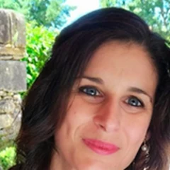

Dra. Marta Araujo-Castro
Endocrinología y Nutrición · Hospital Universitario Ramón y Cajal, MadridEndocrinology and Nutrition · Ramón y Cajal University Hospital, Madrid
Especialista en Endocrinología y Nutrición y coordinadora de la Unidad de Hipófisis y de la Unidad de Patología Suprarrenal del Servicio de Endocrinología y Nutrición del Hospital Universitario Ramón y Cajal (Madrid), centro de referencia nacional para el abordaje de patología hipotálamo-hipofisaria compleja.
Cuenta con amplia experiencia clínica e investigadora en el diagnóstico y tratamiento de las enfermedades hipofisarias, especialmente la enfermedad de Cushing, la acromegalia y los tumores hipofisarios. Su actividad investigadora se centra en la medicina personalizada y la identificación de biomarcadores que permitan optimizar el diagnóstico, el pronóstico y el tratamiento de estas enfermedades. Es autora de más de 200 publicaciones científicas indexadas en PubMed.
Compagina su actividad en el ámbito público con la consulta privada en el Hospital Ruber Internacional, dentro del programa de Segunda Opinión Médica (Expert Opinion Program), y en el Hospital Universitario HM de Tres Cantos.
Specialist in Endocrinology and Nutrition and coordinator of the Pituitary Unit and the Adrenal Unit of the Department of Endocrinology and Nutrition at Ramón y Cajal University Hospital (Madrid), a national reference center for complex hypothalamic-pituitary disease.
She has extensive clinical and research experience in the diagnosis and treatment of pituitary diseases, especially Cushing's disease, acromegaly and pituitary tumors. Her research focuses on personalized medicine and on identifying biomarkers to optimize the diagnosis, prognosis and treatment of these diseases. She has authored more than 200 scientific publications indexed in PubMed.
Alongside her public-sector work, she has a private practice at Hospital Ruber Internacional, within the Expert Opinion (second medical opinion) Program, and at HM Tres Cantos University Hospital.